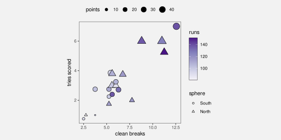
11 Multiple Encodings
Figure 11.1 shows a data visualisation of the performance measures for teams in the 2023 Rugby World Cup (Table 9.1). This visualisation is different from anything we have seen previously because it involves multiple encodings. The data symbol in this case is a simple data point, but we have encoded data values to five different visual features of each data point.
The number of clean breaks is encoded as the horizontal position of the data points and the number of tries is encoded as the vertical position of the data points. The number of points scored is encoded as the area of the data points, the hemisphere is encoded as the shape of the data points, and the number of runs made is encoded as the colour of the data points.
Figure 11.1 is effective in some ways because some of the encodings involve effective visual features. For example, we can easily decode the number of clean breaks and the number of tries from horizontal and vertical positions. We can also decode a correlation between clean breaks and tries from the emergent feature of position in space (Section 9.2).
However, other encodings are less effective. For example, it is less easy to accurately decode number of points scored from size and even harder to decode the number of runs made from colour. These are poor encodings for quantitative data values.
In addition, we are hampered by the fact that many different visual features are changing at once, so it is harder to decode changes in any one visual feature (Section 2.5), plus there are interactions between some visual features, which can affect the decoding of individual features (Section 9.3). For example, the comparison of data points in terms of their size is made harder by the concurrent changes in pattern; it is difficult to tell whether a triangle has the same area as a circle.
One goal of visualising multiple variables like we have in Figure 11.1 is to discover or display multivariate relationships between the variables. For example, we can see that there are four teams in the top-right corner of the plot that are all relatively large and relatively dark in colour, which suggests that there is a group of teams that run more, make more clean breaks, score more tries, and score more points compared to the other teams. However, the decoding of multivariate relationships is not necessarily immediate nor effortless from Figure 11.1.
This chapter looks at some of the different approaches to visualising several variables at once. How do we encode multiple variables so that we can decode multivariate relationships? And can we still decode individual data values from individual variables at the same time?
11.1 Scatter plot matrices
One issue with Figure 11.1 is that it attempts to encode each data variable to a separate visual feature. Once we have used both horizontal and vertical position, we have to start using less accurate and less appropriate visual features, like area and colour for quantitative data values (Section 3.5). If we attempted to encode all of the variables in Table 9.1, we could actually run out of visual features to use (Figure 3.5).
An alternative approach is to encode more of the data variables to the same visual feature. In particular, we can encode more variables to position.1
Figure 11.2 shows a scatter plot matrix of the performance measures for teams in the 2023 Rugby World Cup (Table 9.1). These are the same data values that are encoded in the complicated scatter plot in Figure 11.1. Apart from hemisphere, each different variable is encoded as a horizontal and vertical position and a scatter plot is created for each combination of variables. For example, the number of runs is encoded as the top row and the left column of scatter plots. Within each scatter plot, two variables are encoded as horizontal and vertical position. For example, the second plot in the first row is a scatter plot of the number runs versus the number of clean breaks.
We can decode which variables are being combined because this is just a qualitative decoding from position. Within each scatter plot, the encoding of data values as position allows us to decode and compare individual data values and this provides a superior decoding for most variables compared to Figure 11.1. For example, it is easy to decode from the position of data points in the second scatter plot on the top row that the lowest number of runs made was about 80. This decoding is much more difficult from the colour of the data points in Figure 11.1. We can also identify clusters and outliers within each scatter plot, which is another improvement over Figure 11.1.
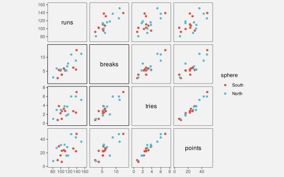
The emergent feature of position in space within each scatter plot allows us to decode the correlation between each pair of variables (Section 9.2) and we can also get a glimpse of multivariate correlations by comparing multiple scatterplots.
For example, looking down the scatter plots just above the diagonal of the matrix, we can see that: the number of runs is correlated loosely with the number of clean breaks; the number of clean breaks is more strongly correlated with the number of tries; and the number of tries is very strongly correlated with the number of points. This suggests a multivariate correlation between all four of these variables.
If we look down the first column of the matrix, we can see that: the number of runs is correlated loosely with the number of clean breaks, a little more loosely with the number of tries, and a little more loosely still with the number of points.
One negative, however, is that this decoding of multivariate relationships requires significant cognitive effort (Section 2.9). A scatter plot matrix is not particularly effective at allowing us to effortlessly decode multivariate relationships.
A scatter plot matrix is effective for decoding individual data values from multiple variables at once, plus pairwise correlations. However, scatter plot matrices are less effective for decoding multivariate relationships.
11.2 Facetting
Figure 11.3 shows a line plot of the number of youth offenders per year in different Police Districts of New Zealand. This visualisation makes use of several effective encodings. For example, we encode year as horizontal position and we encode count as vertical position, although the line data symbols are visual shapes (Section 10.1), so the most effective decoding is to data summaries, like the overall downward trend for all districts.
The encoding of police district in Figure 11.3 is less effective. The district is encoded as colour, but because there are 12 different districts, we are exceeding the capacity of colour (Section 3.6). It is not easy to identify all of the different districts from the colours of the lines (not helped by the overplotting of the lines).
A better encoding for Police District would be position, which has a much higher capacity, but, similar to Figure 11.1, we have been forced to use colour because position has already been taken by year and the number of offenders.
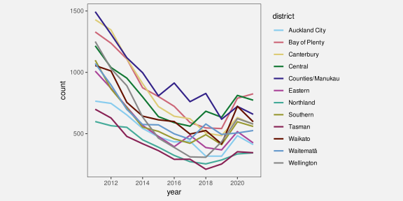
Figure 11.4 shows a solution—a facetted plot—that, like a scatter plot matrix, reuses position to encode additional variables.2 In Figure 11.4, each district is encoded as a position in space and we draw a separate plot for each district. This makes it very easy to decode the individual districts, much easier than it is with Figure 11.3.
The plot for each district also has an enclosing border, which helps to visually differentiate between districts (Section 2.7) and we have ordered the panels so that districts are near to other districts with a similar starting count of offenders (Section 5.1).
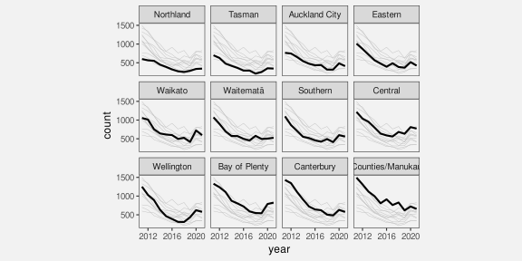
One downside to Figure 11.4 is that decoding and comparison of the number of offenders between districts and/or years is more difficult because the vertical and horizontal positions are unaligned for some comparisons (Section 4.2). In this case, we have mitigated that problem by drawing a grey line for all districts in each plot. Similar to grid lines, this makes it easier to compare the line for each district to other districts (Section 5.4).
11.3 Case study: Bar plots
Figure 11.5 shows a stacked bar plot of the youth crime rate in New Zealand over time, broken down by age group. The data symbols are bars. The crime rate is encoded as the (vertical) length of the bars and the year is encoded as the horizontal position of the bars. These encodings are supplemented by an additional encoding of age as the vertical position of the bars. In effect, the final vertical position of each bar is a complicated encoding of crime rate plus age group.
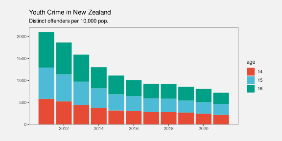
An alternative is shown in Figure 11.6, where we have the same data, but in the form of a side-by-side bar plot. This simple-seeming plot demonstrates another example of reusing position to encode multiple data values.
The crime rate is again encoded as the lengths of the bars and the year is encoded as the horizontal position of the bars. These encodings are supplemented by an additional encoding of age as the horizontal position of the bars.
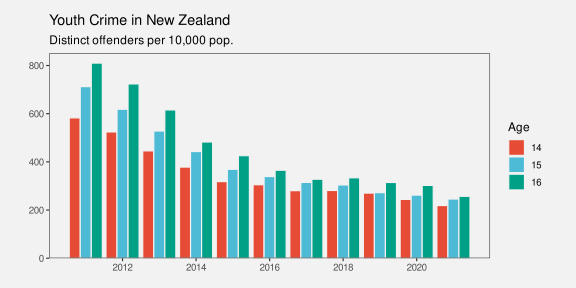
In effect, the side-by-side bar plot is like a facetted plot, where each year is its own bar plot, with age group encoded as horizontal position and crime rate encoded as length. For example, Figure 11.7 shows the same data in a plot with one facet per year.
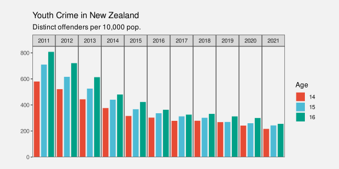
11.4 Non-cartesian encodings
Another way to encode more variables using position is to abandon the standard cartesian coordinate system (Section 4.5). For example, Figure 11.8 shows a 3D scatter plot of three of the performance measures for teams in the 2023 Rugby World Cup (Table 9.1).
Figure 11.8 takes advantage of the visual system’s ability to interpret a 2D image as a 3D scene (Section 2.10). For example, we can see that the spheres in Figure 11.8 appear to lie roughly along a line in space and this decodes to a multivariate correlation between the three variables.3 It is also possible to see that there are four teams somewhat separate in 3D space (not just in a 2D plane, as we saw in Figure 9.4).
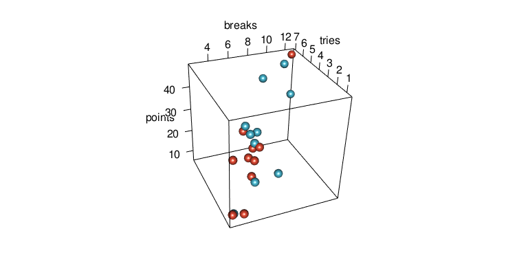
The value of a 3D scatter plot lies in this ability to decode multivariate data summaries from 3D visual shapes. Decoding individual data values is extremely difficult from a 3D scatter plot because data values are encoded as positions along dimensions that are not perpendicular (Section 4.5), may not be linear (Section 4.7), and are not aligned (Section 4.2). However, that should not be the goal of such a data visualisation; a 3D scatter plot is effective for decoding data summaries rather than raw data values.
Figure 11.9 shows another example of a 3D plot. This is a 3D version of the heatmap from Figure 1.2, which shows the rate of offending for different age groups across different years. The crime rate is encoded both as colour and as the height of a 3D bar.
Again, the decoding of positions to individual data values is not very accurate with this sort of 3D plot, although because there is a regular grid of bars, and there are not too many bars, we do not require much accuracy to decode year and age.
The decoding of the bar heights is also inaccurate, again because of non-linear and unaligned scales, but also because many bars are partially obscured.4 This means that we cannot accurately decode the ratio of the highest bar to the heights of other bars; we are limited to ordinal comparisons at best. However, data summaries can be decoded from the overall visual shapes. For example, the general downward trend for all ages over time is much clearer in Figure 11.9 than it was in Figure 1.2. The implicit visual congruence with a descending stairway (Section 7.1) strongly supports the decoding of decreasing crime rates over time.
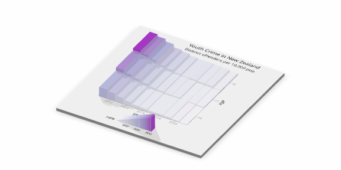
A 3D plot is not effective for decoding raw data values, but it may be effective because the data symbols generate visual shapes in space, which can decode to three-dimensional data summaries, such as clusters, trends, and multivariate correlations.
A significant limitation of 3D plots is that they can only encode three variables using position. Although it is possible to produce views of more than three dimensions on a 2D page or screen, the implicit decoding of visual shapes is limited to three dimensions.5
11.5 Case study: Parallel coordinates plots
Figure 11.10 shows a parallel coordinates plot of the data from Figure 11.1. This is another example of a non-cartesian coordinate system. In Figure 11.10, all of the quantitative variables have been encoded as position, but those positions are along a series of vertical parallel axes, rather than just the normal two perpendicular axes.6
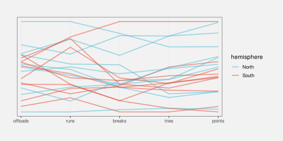
The parallel coordinates plot in Figure 11.10 encodes data summaries rather than raw data values (Chapter 8). All data values are standardised to a range between 0 and 1.7 Table 11.1 shows some of the values that are actually encoded to visual features in Figure 11.10. Each variable is encoded as a different horizontal position and the values within each variable are encoded as vertical position. In this way, all quantitative data values are encoded as position.
In addition, the hemisphere is encoded as colour and a separate line data symbol is drawn for each country. This means that a visual shape is drawn for each country (Chapter 10).
| country | sphere | variable | value |
|---|---|---|---|
| Namibia | South | runs | 0.16 |
| Romania | North | runs | 0.00 |
| Chile | South | runs | 0.30 |
| Samoa | South | runs | 0.31 |
| Australia | South | runs | 0.42 |
| Georgia | North | runs | 0.47 |
On one hand, a parallel coordinates plot appears to makes sense because it encodes multiple data values to position, which is an accurate visual feature for quantitative data. However, this advantage is immediately squandered because the values that are encoded are not the raw data values (Figure 8.2), so a parallel coordinates plot is not effective for decoding raw data values from the positions of the lines. Furthermore, the data symbols are lines, so each data symbol encodes multiple data values (Section 10.1), which makes it difficult to decode even individual data summary values from the lines.
The effectiveness of a parallel coordinates plot comes from the visual shapes of the line data symbols, which allow us to decode data summaries. For example, in Figure 11.10, we are able to identify a group of four lines at the top of the plot that are separate from the other lines, plus a group of three lines at the bottom. This grouping across at least three variables (clean breaks, tries, and points) is easier to see compared to Figure 11.1. We can also more clearly see that there are two teams that have similar numbers of runs to the top four, but then are mixed in with the other teams on the other variables. Furthermore, the fact that many of the lines are reasonably horizontal rather than criss-crossing each other suggests that there is an overall correlation between all four quantitative variables, especially the last three variables, and not just amongst the top four teams.
Compared to Figure 11.2, it is easier to decode multivariate correlations from Figure 11.10 and it is easier to decode multivariate clusters and outliers. A parallel coordinates plot can also cope with a larger number of variables; we just add another vertical axis rather than having to add an entire new row and column to a scatter plot matrix.
A parallel coordinates plot can be effective at identifying high-dimensional groups or correlations because it encodes multiple data values from different variables to a single visual shape.
One major issue with a parallel coordinates plot is that the visual shapes created by the lines are extremely dependent on the order of the variables along the x-axis. For example, Figure 11.11 shows exactly the same data as Figure 11.10, but with a different ordering of the variables. It is now much harder to identify a group of four teams at the top and a group of three teams at the bottom. There is also now no clear decoding of parallel lines between variables, so no sense of correlation between variables (all neighbouring pairs of variables are less correlated).
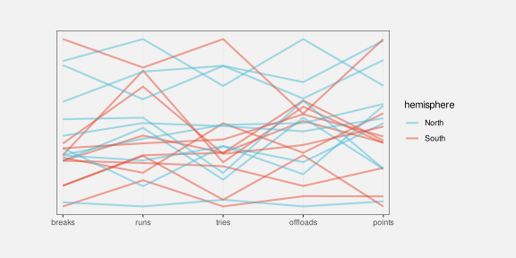
We can also have a large influence on the shapes in a parallel coordinates plot by inverting the direction of the axes. For example, Figure 11.12 shows the same data as Figure 11.10 and with the same ordering of the variables, but with the axes for line breaks and points inverted so that higher values are at the bottom and lower values are at the top. In other words, the positive relationships between runs and line breaks, between line breaks and tries, and between tries and points are now negative relationships (a higher number of tries correlates with a lower number of negative points).
The arrangement in Figure 11.12 shows that a negative correlation between two adjacent variables shows up as many crossings of lines at a very tight location (rather than lots of mostly parallel lines with few crossings for positive correlation). This demonstrates that it can be easier to identify a negative relationship than a positive one with a parallel coordinates plot. For example, the tight crossing of lines between runs and (negative) line breaks and between (negative) line breaks and tries stands out more in this plot than the roughly parallel lines for the same pairs of variables in Figure 11.10.8 On the downside, it is now much harder to identify clusters. For example, it is more difficult to identify the group of four teams that all have high numbers of line breaks, tries, and points.
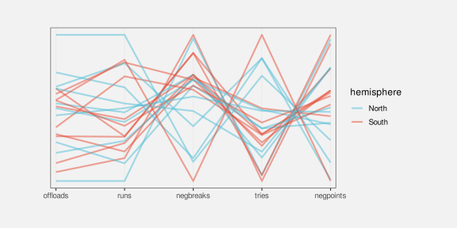
Parallel coordinates plots are often used on much larger data sets, in which case overplotting becomes a serious problem (Section 4.4). The use of colour for different groups and the use of semitransparent colours for the lines can be helpful.9
11.6 Case study: Profile plots
One difficulty with Figure 11.10 is that many of the lines overlap each other, which makes it difficult to decode the separate visual shapes. Figure 11.13 shows an alternative approach to visualising the same data, called a profile plot.10 Similar to a parallel coordinates plot, a visual shape is drawn for each country, but each shape is drawn at its own position in space and the shape a filled polygon, effectively the lines in Figure 11.10 with the area below them filled in.
Like the parallel coordinates plot, this sort of data visualisation can be effective because of the overall shapes. For example, we can see a group of four shapes that are larger than the others. We can also see that Argentina and Fiji appear very similar, which was not easily apparent in previous plots.
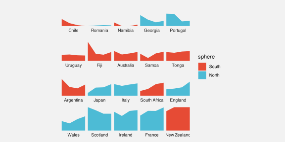
Figure 11.13 uses the same data summaries as Figure 11.10 (Table 11.1), and similar encodings: each variable is encoded as a different horizontal position and the values within each variable are encoded as vertical position and hemisphere is encoded to colour. The data symbol is also similar: multiple data values are encoded to a single data symbol, in this case a polygon.
The difference in Figure 11.13 is that, rather than having all of the data symbols on the same plot, each data symbol is drawn in its own position in space. This makes it easy to view each distinct data symbol.
The cluster of four larger shapes in Figure 11.13 is also easier to see because the countries have been ordered by the number of points scored (the right-hand height of the shape). As we have seen before, ordering data symbols can make a big difference (Section 5.1).
A major weakness with a profile plot like Figure 11.13 is that it does not scale well to large data sets. For example, adding another country to Figure 11.13 would take up additional space, but no more space would be necessary for a parallel coordinates plot like Figure 11.10 because we would just add another line.
11.7 Dangers of multiple encodings
Figure 11.1 showed that the naive approach of just using a separate visual feature for each data variable leads to complex data visualisations that are difficult to decode.
We have explored some alternative data visualisations of multiple variables that provide better decoding of individual data values, like facetting and scatter plot matrices, but they do not provide effortless decoding of multivariate data summaries, like correlation and clusters.
The alternatives that provide better decoding of multivariate data summaries, like 3D plots and parallel coordinate plots, rely on visual shapes that can be decoded to data summaries, but sacrifice the ability to accurately decode individual data values. One danger is that there is still a temptation to decode individual data values, which can result in erroneous or misleading conclusions.
For example, in Figure 11.8, we may be tempted to decode and compare the number of clean breaks for different teams based on the positions of the data points and the labels on the axes, but that is unlikely to result in an accurate decoding, even for ordinal comparisons.
It is perhaps safer to make it clear that only visual shapes should be decoded from the 3D scatter plot by removing the axis scales altogether, as in Figure 11.14.
Given the problems with decoding individual data values, the classic objection to 3D plots is justified: if only two dimensions are required, then nothing is gained by adding a third dimension. There are really no arguments in favour of Figure 11.15 (a) over Figure 11.15 (b).
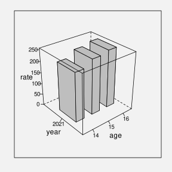
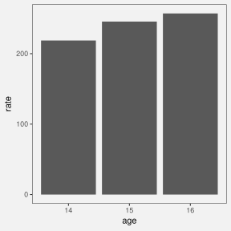
11.8 Summary
When we visualise multiple variables at once, it is not effective to encode each different variable to a different visual feature because that usually forces us to make use of a visual feature that is either inappropriate or inaccurate.
An alternative is to reuse the same visual feature for multiple different variables. In particular, we can reuse position for more than just two variables, for example, to create a scatter plot matrix or a facetted plot. This at least allows us to accurately decode individual variables.
Another alternative is to use non-cartesian coordinates, for example 3D plots or parallel coordinates plots. These generate visual shapes that allow us to decode multivariate data summaries, like multivariate clusters and multivariate correlations. However, in order to gain multivariate data summaries, we typically have to sacrifice the ability to accurately decode individual data values.
No matter which approach we use, there is still a limit to how much information can effectively be displayed at once within a static data visualisation. This is one area where dynamic and interactive graphics can be useful because the viewer is able to rapidly switch between multiple views of the data.
Becker, Richard A., William S. Cleveland, and Ming-Jen Shyu. 1996. “The Visual Design and Control of Trellis Display.” Journal of Computational and Graphical Statistics 5 (2): 123–55. https://doi.org/10.1080/10618600.1996.10474701.
Cook, Dianne, Andreas Buja, Javier Cabrera, and Catherine Hurley. 1995. “Grand Tour and Projection Pursuit.” Journal of Computational and Graphical Statistics 4 (3): 155–72. https://doi.org/10.1080/10618600.1995.10474674.
Inselberg, Alfred. 2009. Parallel Coordinates: Visual Multidimensional Geometry and Its Applications. Springer New York, NY. https://doi.org/10.1007/978-0-387-68628-8.
Pomerenke, David, Frederik L. Dennig, Daniel A. Keim, Johannes Fuchs, and Michael Blumenschein. 2019. “Slope-Dependent Rendering of Parallel Coordinates to Reduce Density Distortion and Ghost Clusters.” In 2019 IEEE Visualization Conference (VIS), 86–90. https://doi.org/10.1109/VISUAL.2019.8933706.
Satyanarayan, Josh Pollock AND Arvind. 2026. “GoFish: A Grammar of More Graphics!” IEEE Transactions on Visualization & Computer Graphics (Proc. IEEE VIS). https://vis.csail.mit.edu/pubs/gofish.
Tufte, Edward R. 1983. The Visual Display of Quantitative Information. Cheshire, Connecticut: Graphics Press.
Wegman, Edward J. 1990. “Hyperdimensional Data Analysis Using Parallel Coordinates.” Journal of the American Statistical Association 85 (411): 664–75. http://www.jstor.org/stable/2290001.
Wilkinson, Leland. 2005. The Grammar of Graphics. Second edition. New York: Springer.
The reuse of position is handled in a variety of ways within data visualisation frameworks. For example, the Grammar of Graphics (Wilkinson 2005) allows for collision modifiers to solve overlapping and separately allows for facets. GoFish (Satyanarayan 2026) introduces the idea of geometric operators, such as stacking, to the visualisation grammar.
In this book, we will just talk about encoding more than two variables to position.↩︎
This method of producing a sub-plot for each level of a qualitative variable (or for each combination of levels for multiple qualitative variables) is called facetting in the Grammar of Graphics (Wilkinson 2005), but it is also known as multipanel conditioning plots or trellis plots (Becker, Cleveland, and Shyu 1996).↩︎
This visual shape is more apparent if we are able to animate the image. In the online version of this book it should be possible to click and drag the mouse to rotate the image in space.↩︎
The problem of elements being obscured is a significant one. The angle of view for Figure 11.9 and the placement of the plot elements was carefully chosen. As with the 3D scatter plot, this problem can be removed by allowing the 3D scene to be rotated interactively.↩︎
A 3D plot is just a projection of three dimensions into 2D. More than three dimensions can also be projected to 2D and this can result in recognisable visual shapes in 2D or 3D, but decoding a meaningful data summary from those shapes becomes more difficult. This is another case where dynamic and interactive data visualisation can be very helpful (Cook et al. 1995).↩︎
At a deeper level, a parallel coordinates plot represents a single point in \(n\)-dimensional space with a line through \(n\) vertices on the parallel coordinates plot and several points that lie on the same line in \(n\)-dimensional space translate to several lines that meet at the same point on a parallel coordinate plot (or a set of lines that are parallel).
Wegman (1990) provides a discussion from the point of view of statistical analysis.
Inselberg (2009) provides an extremely thorough explanation, derivation, and series of demonstrations, from a more abstract computational geometry perspective.
The early parts of Chapter 10 provide some accessible comments relevant to data visualisation.↩︎It is possible to use unscaled axes on a parallel coordinates plot, though that becomes untenable if the range of the values on different variables varies widely. There are also other ways to perform the scaling, for example, standardisation (in the sense of subtracting the mean and dividing by the standard deviation).↩︎
There are many variations on parallel coordinates plots that attempt to mitigate some of the visual artifacts that can occur. For example, Pomerenke et al. (2019) suggest a way to reduce the higher visual impact of steeper, intersecting lines in a parallel coordinates plot.↩︎
Parallel coordinates plots are an example of a data visualisation that benefits a lot from interactivity. The ability to select subsets of the lines can help with overplotting and the ability to rapidly experiment with different orderings and directions of the axes can help with determining the most effective view of the data.↩︎
The idea of drawing lots of small repeated plots, with a consistent scale and style is referred to by Tufte (1983) as small multiples. This corresponds strongly with the idea of facetting (Section 11.2).↩︎